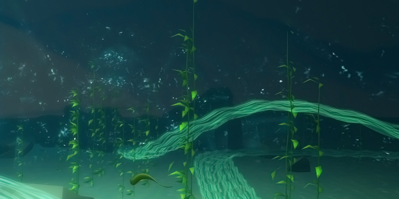
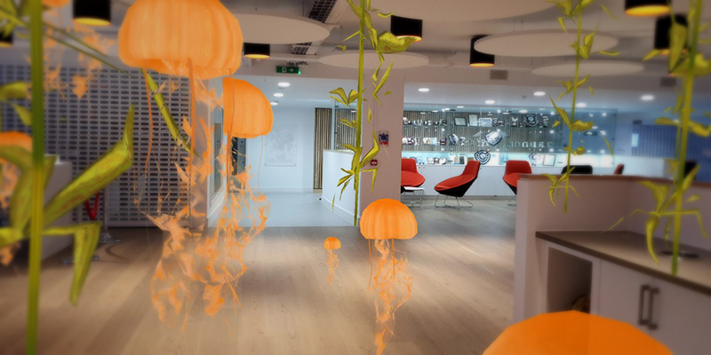

Original design
Originally this project started as a university assignment. The main task was to produce 3d graphics using OpenGL 4.0 and C++. The project was built on the provided template, so that it can be more focused on developing and producing graphics. I had to produce: a non-linear spline, on which the gameplay would take place, in addition to- environmental objects, implementation of lights and other visual effects.
Concept
I have chosen to produce an underwater scene, which has a jellyfish navigating in the underwater current. The main challenge of the game comes from avoiding sea-urchins, the jellyfish can be propelled forward – that’s the only available movement so the player has to get creative and work on timing to successfully pass through the obstacles. From the beginning of the projects I kept my visual design: clean and consistent to achieve visual harmony, and give it a complete look.

VR & AR implementation
This project was later recreated for an AR experience. In order to do that I had to rewrite all shaders in Unity’s cgprogram, and my friend Rodrigo implemented Unity’s AR SDK.
Later we decided to make an AR+VR version, where the scene can be explored using a phone with AR capabilities. The project is still ongoing and hopefully soon, there will be a video.
